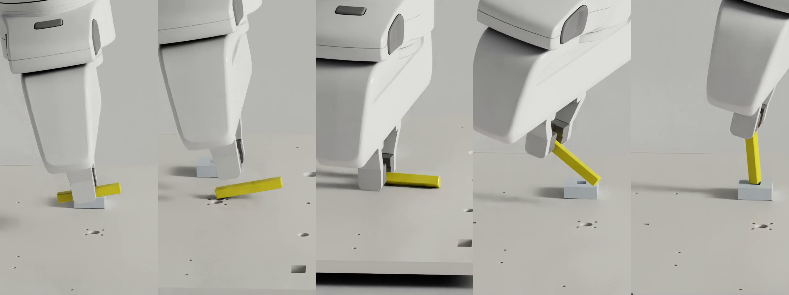

The assembly challenge
The NIST board combines twenty assemblies, from nut threading and gear meshing to peg and connector insertion. Parts as small as 4 mm in diameter must be grasped, reoriented, and aligned with tight-fitting mating surfaces.
Small errors can cause slipping or jamming, requiring the robot to recover and try again. With several components on the board, it must also handle clutter and choose an assembly order: placing one part can obstruct access to another.